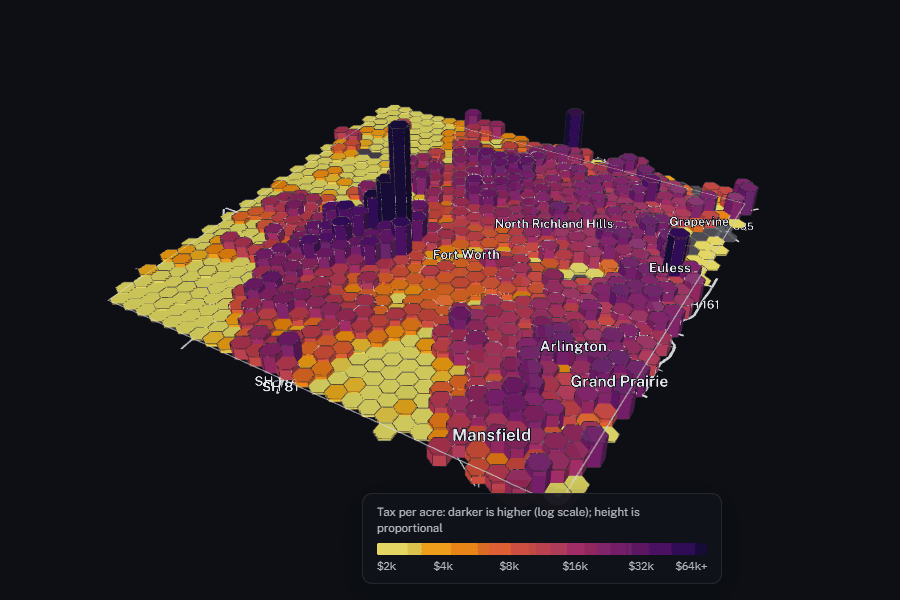

Mapping Communities and Land Value
Using maps to see how services, health and property value are spread across places, from census tracts to Tarrant County's parcels.
- Active
- 2023–present
- GIS
- ArcGIS
- Census tracts
- Community health
- Property tax
- Land value
- Hexagon maps
- Python

In plain English
Where are a region's services, health care and wealth, and which places go without? Since 2023, SEAR Lab students have mapped versions of that question in ArcGIS: how U.S. metro areas connect by road, rail, air and water; how close Texas hospitals sit to airports and power plants; where community health centers stand against census-tract measures of social vulnerability; and how amenities and property value vary by county and ZIP code.
The newest strand asks how much property tax each acre of Tarrant County produces, and why some areas raise less. In 2026 the lab rebuilt it as a reproducible Python pipeline that joins the 2025 appraisal roll to 660,267 taxable parcels and reports only area totals. Property tax from all taxing units came to about $2,307 per resident county-wide and $2,150 in Fort Worth, but $1,070 in Fort Worth's council District 11. East Fort Worth (Districts 5, 8 and 11) raises 0.69 times the city's average tax per acre. District 11's low effective tax rate comes mostly from appraisal caps: 42% of its single-family homes are capped, against 16% in the rest of the city. Some figures are estimates: a few taxing units collect their own taxes, Northwest ISD is approximated from its posted rate, some improvement districts are missing from the data, and council-district populations are 2020 Census counts scaled to 2025.
Main points
- One question runs through every map: how resources, services and value are spread across places, whether the unit is a census tract, ZIP code, parcel or hexagon.
- The ArcGIS projects taught the lab which public layers matter, such as census tracts, the CDC Social Vulnerability Index, Justice40 disadvantaged communities and federal infrastructure maps.
- The Tarrant County rebuild fixed two earlier errors: appraised value had been reported as tax, and records were matched on owners' mailing addresses, not on parcels.
- Equal-area hexagons let places of different shapes and sizes be compared fairly, and the lab's open-source hexmap-web library, also used by the Texas grid dashboard, turns them into interactive web maps.
- Next is the cost side: whether the tax each area raises covers the roads, water and sewer lines that serve it.
![Hexagon heat map of Tarrant County, Texas, in 1-square-mile hexagons, colored by property tax per acre in 2025 from pale yellow (about $2,000 an acre or less) through orange and red to near-black ($64,000 or more). The darkest hexagons are downtown Fort Worth and the area south-west of it. Most of the urban county, including North Richland Hills, Grapevine, Euless, Arlington, Grand Prairie and Mansfield, is red to purple; east and south-east Fort Worth is orange; the rural west and south are pale yellow. Hatched gray hexagons at DFW Airport are entirely tax-exempt land. Outlines mark the seven cities over 50,000 people.](img/hero.png)
Papers, code and materials
- Codesear-labs/hexmap-web: the lab's open-source library for interactive hexagon maps, built for this project
- RelatedCOVID-19 Last-Mile Distribution: mapping how scarce treatments and vaccines could reach Houston's most vulnerable neighborhoods
- RelatedBuilding Asset Mapping: rooftop solar across DFW, built on the same appraisal data
- RelatedTexas Grid Dashboard: ERCOT generation mapped with the same hexmap-web library
People
- Erick C. Jones Jr., PhD, PEPrincipal Investigator · SEAR Lab directorin
- Shraddha VarekarStudent researcher; co-author of the 2023 ArcGIS report on how U.S. metro areas connectin
- Ahmed Saboor SyedStudent researcher; county-level amenity mapping in ArcGIS (2024)
- Ritesh MuralidharStudent researcher; 2024 Tarrant County land value analysis
- Varun KulkarniStudent researcher; 2025 Tarrant County land and property value report
Current team: names to be added from the lab personnel sheet. Profiles marked in link to LinkedIn. More past and present lab members are on the SEAR Lab team page.